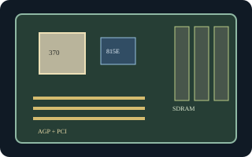

[ INDIVIDUAL COMPONENT // MOTHERBOARDS ]
Intel Desktop Board D815EEA
Socket 370 Pentium III-era Intel ATX board using the 815E chipset. D815EEA is a distinct Intel model; do not treat its firmware as interchangeable with the later D815EEA2.

Exact identity and revision: Intel Desktop Board D815EEA, standard specification BIOS ID EA81510A.86A. PCB revision and AA number vary by assembly; read them from the specimen and use the matching D815EEA CPU list and BIOS, never an EEA2 image.
Specifications
| CPU / socket / chipset | Socket 370 Intel Pentium III and Celeron models supported by the exact AA/BIOS; Intel 815E with integrated graphics and ICH2. |
|---|---|
| Form factor / case | ATX, approximately 12 x 8.2 in.; ATX case with correct board standoffs and I/O shield. |
| Memory | Three 168-pin PC100/PC133 SDRAM DIMM sockets, up to 512 MB supported. |
| Expansion | One AGP slot and five PCI slots; use AGP cards meeting the board's voltage/keying requirements. |
| Storage | Two IDE channels up to ATA/100 and a floppy-disk connector. |
| Rear I/O | VGA, PS/2 keyboard/mouse, serial, parallel, USB 1.1, and audio; optional LAN/audio configuration depends on assembly. |
| BIOS / PSU | Intel legacy BIOS family EA81510A.86A. Standard 20-pin ATX power; confirm the AA label, connector, and PSU rail requirements before fitting into an ATX chassis. |
Compatibility and revision notes
Intel 815E graphics are integrated; the D815EEA must not be confused with 815EP models without onboard graphics. Socket fit alone does not establish CPU support: check the D815EEA processor table and minimum BIOS for the printed AA. Confirm ATX standoff positions and rear-I/O alignment.
Sources & further reading
- Intel Desktop Board D815EEA Technical Product Specification (archived Intel document)Model-specific technical reference for board layout, BIOS, power, and connectors.
- Intel D815EEA Product Guide (archived scan)Intel-authored guide covering installation, supported hardware, and revision cautions.